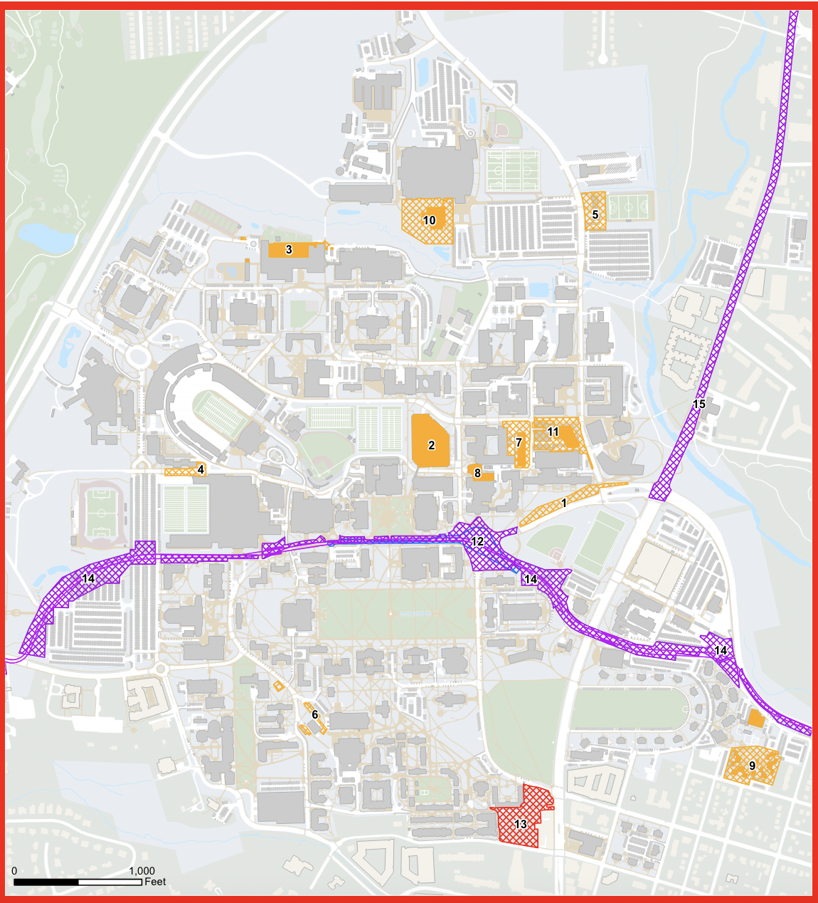

There’s always construction going on at the campus of the University of Maryland.
Since 2021, there have been 15 different construction sites around the Maryland campus for different projects and upgrades, close to half of which are still active, according to Maryland’s Construction Activity Map.
These active sites close off certain areas of campus to any forms of transportation, limiting the way students can get to their classes and other locations. 94.1 percent of Maryland students who participated in a survey said that they walk through areas of construction on their way to class.
The lack of paths limits the way people can move around campus, but it also creates congestion and traffic in certain areas. In the same survey referenced earlier, 70.6 percent of students said that they experience congestion or traffic while on their way to class. The same students identified lots of different areas around campus where they experienced traffic and congestion, but the problem spot most consistently reported was around the Edward St. John Teaching Center(commonly known as ESJ), a building located close to the middle of campus.
ESJ was the building most identified due to there being a main crosswalk right next to it, but every other building located off of Campus Drive has limited pathways due to what Maryland identifies as “major construction” along Campus Drive on both sides. This is due in part to one massive project: The Purple Line, a light rail line that will stretch from Prince George’s County to Montgomery County with an expected construction end date of 2025 on Maryland’s campus.
With the construction of the Purple Line, Campus Drive, one of the main roads through the Maryland Campus, is now a one-lane one-way street, creating traffic as cars trying to get across campus pile up waiting for students to cross. This congestion of cars leads to an unintended negative effect - students using micro mobility vehicles, like bikes, e scooters, and skateboards, end up going from the streets to the sidewalks in efforts to make it to class on time.
On Maryland’s Transportation Services page, it’s stated that Maryland State Law regulates that e-scooters and e-bikes operate under the same code that regulates standard bicycles, which means that they “must be operated on the road, permitted paths, and abide by all traffic laws and posted signages. These laws include, but are not limited to, stopping at stop signs, obeying traffic signals, riding in the direction of traffic, the prohibited wearing of headsets or earplugs in both ears, and yielding to other vehicles and pedestrians”.
78 percent of students surveyed say that they’ve almost been hit by bikes or scooters while going to class, which means that students using micro mobility vehicles aren’t following the traffic laws that they’re supposed to. Students who say they’ve almost been hit rarely pinpointed a specific place, with some stating general areas but others just answering with “everywhere on campus”.
The University of Maryland Police has attempted to take action to counter unsafe micro mobility habits. They’ve recently started enforcing previously unenforced laws stated earlier at the start of this semester, conducting 145 traffic stops for bikes and e-scooters, according to an article in The Diamondback. The pickup in activity was in response to a rising number of micro mobility accidents on campus(I’m still waiting on responses for the appropriate data from the UMD Department of Transportation and Pines.)
“This is out of an abundance of caution and care because we saw an exponential increase in incidents last year, last fall, and really some serious injuries,” Pines told the Diamondback. “This is a good thing for our campus and a wake up call for our students to just be a little safer and follow the rules of the road.”